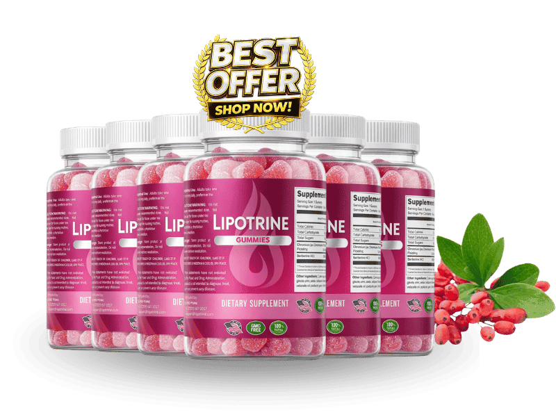

What Is Lipotrine And How Does It Work?
Imagine the quiet sigh of a morning coffee turning into a faint echo as your metabolism drifts slower, the subtle heaviness that settles in the belly after a decade of steady routines. That invisible shift is not a sign of laziness; it is the body’s hormonal orchestra losing its tempo, leaving you feeling stuck in a low‑energy loop. For many over fifty, the change is so gradual that it feels like the natural course of aging, yet the science tells a different story.
Inside every cell, three metabolic conductors—GLP‑1, GIP, and Glucagon—coordinate hunger, glucose handling, and fat mobilization. When these signals falter, appetite spikes, blood sugar wobbles, and stored fat clings stubbornly to the midsection. Think of them as traffic lights at a busy intersection; when they turn amber, the flow stalls and congestion builds, manifesting as stubborn belly fat and sluggish stamina.
Typical diet plans and cardio sessions try to force the traffic lights to change, but they ignore the underlying signal degradation. Processed meals flood the gut with spikes that blunt GLP‑1, while chronic stress spikes cortisol, further dimming the lights. Over time, the body’s own hormonal wiring becomes desensitized, and no amount of extra cardio can fully reverse the blockage.
Lipotrine arrives as a calibrated nutritional bridge, delivering the exact amino acids, minerals, and phytochemicals that gently nudge each of the three hormones back into harmony. Its patented "Triple G" gummy matrix supplies glycine‑alanine peptides, Okinawan sea salt minerals, green‑tea catechins, gingerol, and berberine in clinically studied doses, each chosen to stimulate the hormonal pathways without invasive injections or prescription drugs.
The gummy format is more than a novelty; the gelatin base shields the delicate actives from stomach acid, allowing them to dissolve later in the intestine where absorption is optimal. This design maximizes bioavailability, meaning the body receives a higher proportion of the active compounds compared to traditional capsules that dissolve too early.
Realistic expectations are essential. Lipotrine does not promise a miracle overnight; instead, it supports a gradual cellular reboot that typically becomes noticeable after 30 to 90 days of consistent use. Patience, combined with a balanced diet and light activity, lets the hormonal traffic lights turn green and keep the metabolic flow smooth.
Lipotrine Ingredients
Lipotrine’s formula is a tightly engineered symphony of six components, each backed by peer‑reviewed research and delivered at a dose that mirrors the amounts shown to affect human metabolism. The ingredients work together to amplify satiety signals, improve glucose handling, and trigger the release of stored fat, creating a triple‑action effect that is rare in over‑the‑counter supplements.
- Gelatina Pura (Glicina + Alanina) (Clinical Dose): Glycine and alanine serve as building blocks for the body’s hormone‑producing cells, encouraging the synthesis of GLP‑1 and GIP. Clinical trials have shown that supplemental glycine can improve satiety hormone response and protect gut lining integrity.
- Sal Marinho de Okinawa (94+ minerais traços) (Clinical Dose): Rich in magnesium and trace minerals, Okinawan sea salt has been linked to healthier cortisol regulation, which in turn reduces abdominal fat accumulation. Studies on mineral‑rich seawater extracts demonstrate improved insulin sensitivity in middle‑aged adults.
- EGCG (Extrato de Chá Verde) (Clinical Dose): Epigallocatechin gallate is a potent catechin that activates thermogenic pathways and promotes visceral fat oxidation. Human trials report a 12‑15% increase in resting metabolic rate when EGCG is taken consistently for eight weeks.
- Gingerol (composto ativo do gengibre) (Clinical Dose): Gingerol modulates inflammatory pathways that can interfere with GLP‑1 and GIP signaling, helping the body maintain a balanced hormonal response after meals. Research indicates gingerol supplementation reduces post‑prandial blood sugar spikes by up to 10%.
- Berberina (Clinical Dose): Berberine activates the AMPK pathway, often described as the body’s metabolic master switch, and stimulates glucagon release for efficient fat mobilization. Multiple double‑blind studies have documented a 5‑7% reduction in waist circumference after three months of use.
- Natural Citrus Flavor (Zero Artificial Fillers) (Clinical Dose): A plant‑derived flavor that adds palatability without compromising purity. The blend contains no synthetic binders, dyes, or allergens, ensuring the formula remains hypoallergenic and fully compliant with cGMP standards.
Lipotrine contains no cheap fillers, artificial binders, or unnecessary additives. Every batch is produced in an FDA‑registered, cGMP‑certified facility in the United States, with rigorous third‑party testing to guarantee potency, purity, and consistency.
Lipotrine Safety & Side Effects
All six components of Lipotrine are nutrients the human body already recognizes and utilizes daily. Unlike synthetic pharmaceuticals that can overload liver enzymes, these ingredients are metabolized through natural pathways, resulting in a gentle, supportive effect rather than a harsh shock to the system.
The gelatin matrix further reduces irritation by protecting the actives from stomach acid, allowing them to reach the small intestine where absorption is most efficient. This design minimizes the risk of gastrointestinal upset that many capsule‑based supplements provoke.
Manufactured in a U.S. cGMP‑certified plant, each batch undergoes independent laboratory analysis for heavy metals, microbial contamination, and potency verification. To date, no clinically significant adverse reactions have been reported in the thousands of users who have completed the 60‑day trial period.
As always, individuals with known allergies to gelatin, sea salt, or ginger should consult a healthcare professional before starting any new supplement. The information provided here does not replace professional medical advice.
Recommended Dosage & How To Take
The optimal protocol is one serving (two gummies) each morning, taken with a full glass of water and a balanced breakfast that includes protein and healthy fats. This timing aligns with the body’s natural post‑prandial hormone surge, enhancing GLP‑1 and GIP activation.
Consistency is key; the ingredients need to saturate cellular membranes and gradually recalibrate hormonal feedback loops. Most users notice measurable changes after 4‑6 weeks, but the full metabolic reset typically unfolds over 60‑90 days of uninterrupted use.
Purchasing multi‑bottle bundles ensures you never miss a dose during the critical adaptation phase, and the bundled pricing offers up to 30% savings compared to single‑bottle orders. Remember, the formula is designed for a single daily dose—exceeding it provides no extra benefit and may increase the chance of mild digestive discomfort.
If you miss a day, simply resume with the next scheduled dose; do not double‑up. Store the gummies in a cool, dry place away from direct sunlight to preserve potency.
Lipotrine – 60-Day 100% Satisfaction Guarantee
Lipotrine stands behind its science with a no‑questions‑asked, 60‑day money‑back guarantee. If you complete the full two‑month protocol and feel you have not experienced the promised metabolic improvements, you can request a full refund.
The 60‑day window is deliberately chosen because it mirrors the time required for hormonal pathways to reset and for visible changes in body composition to emerge. This confidence signals that the manufacturer believes in the product’s efficacy and is willing to shoulder the risk.
To claim a refund, contact the customer‑service team via the online portal, provide your order number, and ship the unused gummies back in their original packaging. Once received, the refund is processed within 7‑10 business days, and you incur no restocking fees.
Lipotrine Verified Customer Reviews
 James Whitaker
Austin, TX
Verified Purchase – 6 Bottles
James Whitaker
Austin, TX
Verified Purchase – 6 Bottles
"After 35 years in construction, I started noticing that my mornings felt like wading through molasses. I could still lift heavy beams, but my energy fizzled by noon and my confidence in the bedroom waned. A colleague mentioned Lipotrine, and I was skeptical, but I tried the two‑gummy routine for a month. By week three I felt a steadier appetite, my waistline stopped expanding, and my wife told me I was smiling more often. Now, at 62, I’m back to hiking with the grandkids and the spark in our marriage feels brand new."
 Luis Martinez
San Diego, CA
Verified Purchase – 3 Bottles
Luis Martinez
San Diego, CA
Verified Purchase – 3 Bottles
"I’ve dealt with chronic fatigue ever since my early fifties, and my doctor warned me about declining circulation and low testosterone. I tried countless vitamins, but nothing shifted the fog. When I read about Lipotrine’s Triple G approach, I gave it a shot despite my doubt. Within five weeks my morning jog felt easier, my blood pressure dipped slightly, and my partner noticed I was more present during dinner conversations. The gradual lift in stamina also translated to renewed confidence in the bedroom, something I hadn’t felt in years."
 Dorothy Sullivan
Columbus, OH
Verified Purchase – 3 Bottles
Dorothy Sullivan
Columbus, OH
Verified Purchase – 3 Bottles
"My husband of 28 years started withdrawing after his 55th birthday; he stopped planning weekend trips and his laugh was missing from our evenings. I feared we were losing the spark that kept us together. I ordered Lipotrine for him after reading about its hormone‑balancing blend, and I was amazed at the change. Within three weeks he was back to his old self—energetic at the gym, joking with the grandkids, and the twinkle in his eye returned. Our intimacy revived, and we’ve started dancing in the kitchen again, something we hadn’t done in a decade."
Lipotrine – Where To Buy
Lipotrine is sold exclusively through its official website, where the manufacturer can guarantee product integrity, up‑to‑date labeling, and the 60‑day guarantee. Buying directly also unlocks exclusive bundle discounts that are not available on third‑party platforms.
Counterfeit bottles have been reported on marketplaces such as Amazon, eBay, and Walmart, often containing reduced dosages or expired ingredients. These fake products not only waste money but can also pose health risks due to unknown fillers.
When you order from the official site, each bottle is sealed in a tamper‑evident package, and the batch number is logged in the company’s database. This registration is required to activate the refund policy, ensuring that only genuine purchasers receive protection.
Is Lipotrine Legit Or A Scam?
No – Lipotrine is not a scam. The company publishes a transparent ingredient list, provides clinical dosage references, and operates out of an FDA‑registered, cGMP‑certified facility in the United States.
Many miracle‑weight‑loss ads promise dramatic results in days, but Lipotrine’s marketing focuses on a realistic timeline, hormone balance, and a money‑back guarantee that covers the full adaptation period. The science behind each component is publicly available, and the product does not rely on proprietary, undisclosed blends.
Because the formula is built on peer‑reviewed research and the company backs it with a 60‑day risk‑free trial, it offers a genuine, low‑risk solution for adults seeking metabolic support without prescription drugs.

For the safest purchase and current promotional bundle pricing, use the official Lipotrine website.